Fonte: gare di altri paesi/India/biologia/INBO2018-Question.pdf · Apri PDF · apri PDF p.1
Soluzioni (stessa cartella): · · · · · · · · · · ·
Problema 1
The beaded string in the diagram represents a protein backbone. The protein is divided into regions (i) - (iv). Within each region, some side chain interactions are shown. In which region of the protein, both Van der Waals interactions and hydrophobic interactions are depicted?
(The diagram shows four regions i-iv of a protein backbone with side chains: region i has -CH2-S-S-CH2-; region ii has -OH and -CH2-C(=O)-OH; region iii has -CH2-CH2-CH2-CH2-NH3+ and -O—C(=O)-CH-; region iv has -CH(CH3)-CH2-CH(CH3)-CH3 and -CH2-CH3.)
(A) i (B) ii (C) iii (D) iv
Topic: Order-of-Magnitude Estimation Metodi: Physical Modeling, Symmetry Argument Competenze: Diagrammatic Reasoning, Physical Reasoning Fonte: Testo (PDF) — p.2
Problema 2
Bacteriophages take control of the host transcription machinery and sequentially express different groups of phage genes. A, B, C and D are four groups of phage genes expressed in the order A, B, C, D. Each group of genes has a specific type of promoter, each of which requires a specific sigma factor to initiate transcription. The genes encoding sigma factors to transcribe group A and group D genes are located in:
(A) bacterial genome and phage genome respectively. (B) bacterial genome. (C) phage genome. (D) phage genome and bacterial genome respectively.
Topic: Order-of-Magnitude Estimation Metodi: Physical Modeling, Superposition Principle Competenze: Physical Reasoning, Diagrammatic Reasoning Fonte: Testo (PDF) — p.2
Problema 3
Following is a DNA profile of five individuals of which two are parents. Which of the remaining profiles belong to children of these parents?
(The diagram shows gel electrophoresis band patterns for individuals A, B, C, D, E.)
(A) A and D (B) C and E (C) B and C (D) C and D
Topic: Order-of-Magnitude Estimation Metodi: Experimental Data Analysis, Physical Modeling Competenze: Diagrammatic Reasoning, Experimental Data Analysis Fonte: Testo (PDF) — p.3
Problema 4
Which one of the following molecules is least likely to pass through the plasma membrane?
(A) CO2 (B) CH3-CH2-OH (C) NaHCO3 (D) CH3-CO-CH3
Topic: Order-of-Magnitude Estimation Metodi: Physical Modeling, Dimensional Analysis Competenze: Physical Reasoning, Unit Conversion Fonte: Testo (PDF) — p.3
Problema 5
Bacterial core RNA Polymerase (RNAP) can bind to DNA. However, in order to initiate transcription from specific promoter sequences, it needs to associate with a sigma factor to form the holo-enzyme. Study the table below and choose the correct explanation for this phenomenon.
| Assoc. Const. non-specific DNA | Assoc. Const. promoter DNA | Half life (s) non-specific DNA | Half life (s) promoter DNA | |
|---|---|---|---|---|
| Core RNAP | 1 | 1 | 1 | 1 |
| Holo RNAP | 0.001 | 100 | 0.1 | 1000 |
(A) Sigma factor provides catalytic site essential for transcription. (B) Holo RNAP is able to bind to a longer stretch of DNA sequence thus increasing the probability of binding to a promoter sequence. (C) Binding of sigma factor increases the catalytic efficiency of core RNAP. (D) Sigma factor destabilizes the non-specific RNAP-DNA complex and strengthens the RNAP-promoter complex.
Topic: Order-of-Magnitude Estimation Metodi: Experimental Data Analysis, Physical Modeling Competenze: Experimental Data Analysis, Physical Reasoning Fonte: Testo (PDF) — p.3
Problema 6
Which of the following adaptations help plants grow under a canopy?
I. Increasing the specific leaf area (ratio of leaf area to dry mass). II. Increase in the chlorophyll a/b ratio in the light harvesting complex. III. Reduced tillering (production of lateral shoots) if the plants belong to grass species. IV. Elongation of petioles to enhance access to sunlight.
(A) II and IV only (B) I, II, and III only (C) I, III and IV only (D) I, II, III and IV
Topic: Order-of-Magnitude Estimation Metodi: Physical Modeling, Superposition Principle Competenze: Physical Reasoning, Diagrammatic Reasoning Fonte: Testo (PDF) — p.4
Problema 7
The following characters are found in many trees that grow in temperate forests.
i. Pollen are shed at the beginning of growing season before the leaves develop. ii. Shedding of pollen is timed to avoid high humidity and rain.
In such trees, the type of pollination is most likely to be:
(A) entomophilic. (B) anemophilic. (C) ornithophilic. (D) chiropterophilic.
Topic: Order-of-Magnitude Estimation Metodi: Physical Modeling, Approximation & Series Expansion Competenze: Physical Reasoning, Estimation & Approximation Fonte: Testo (PDF) — p.4
Problema 8
In an experiment, water potentials of soil and a plant growing in the soil were measured for 8 days. The results are shown below. Mark the correct interpretation. (White and black boxes on the X-axis indicate day and night respectively.)
The graph shows water potential (bars) on the Y-axis ranging from 0 to -14, with a curve P plotted over Time (days) 1-8. The soil water potential is approximately -2 bars and the plant water potential (P) oscillates diurnally, reaching as low as -14 bars.
(A) The plant is growing in a soil that is watered optimally throughout the experimental period. (B) Graph P indicates the transient wilting of the plant upto 6 days. (C) The plant is most likely to be a xerophyte. (D) Later days represent the wilting of younger leaves of the plant.
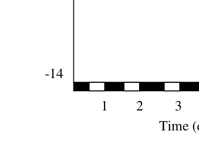
Water potential vs time graphTopic: Order-of-Magnitude Estimation Metodi: Experimental Data Analysis, Graph Linearization Competenze: Experimental Data Analysis, Diagrammatic Reasoning Fonte: Testo (PDF) — p.5
Problema 9
Cross sections of two leaves (P and Q) are shown.
(Diagram shows cross-sectional anatomy of two different leaves: P appears thicker with dense mesophyll; Q appears thinner with larger air spaces.)
P and Q respectively most likely belong to:
(A) a xerophyte and a hydrophyte. (B) a mesophyte and a halophyte. (C) a mesophyte and a hydrophyte. (D) a hydrophyte and a mesophyte.
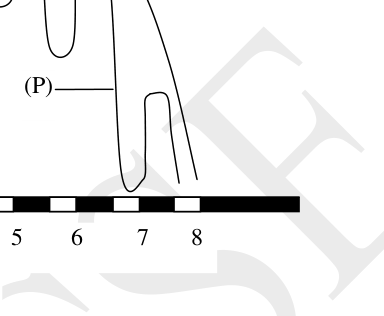
Cross sections of two leaves P and QTopic: Order-of-Magnitude Estimation Metodi: Physical Modeling, Symmetry Argument Competenze: Diagrammatic Reasoning, Physical Reasoning Fonte: Testo (PDF) — p.5
Problema 10
Oxygen content of tissues/organs of Australian sea lion at two developmental stages is shown in the bar graph.
The bar graph shows oxygen content (O2 ml/kg) on the Y-axis (range 0-60) for three tissues X, Y, Z at two stages: 6 months old and Adult.
Three tissues represented by X, Y and Z are respectively:
(A) Brain, heart and lungs. (B) Lungs, blood and muscles. (C) Lungs, heart and brain. (D) Blood, muscles and lungs.
Topic: Order-of-Magnitude Estimation Metodi: Experimental Data Analysis, Physical Modeling Competenze: Experimental Data Analysis, Diagrammatic Reasoning Fonte: Testo (PDF) — p.6
Problema 11
During the growth of marine fish, initially, yolk sac and skin are the principal sites where transport protein ‘X’ is located. Later, skin and gills become principal sites and finally ‘X’ becomes localized to gills. The protein ‘X’ is:
(A) glycogen synthase. (B) glucokinase. (C) Na+ K+ ATPase. (D) glucose permease.
Topic: Order-of-Magnitude Estimation Metodi: Physical Modeling, Superposition Principle Competenze: Physical Reasoning, Diagrammatic Reasoning Fonte: Testo (PDF) — p.6
Problema 12
Consider a case where a mutation ‘R’ occurred in some prairie moles influencing their behavior/physiology. In which of the following cases, it can be asserted that the mutant allele frequency will increase in the population?
i. The mutation results in enhanced monogamy. ii. The mutation results in greater average number of surviving offspring as compared to the wild type population. iii. The mutation results in longevity in the mole population. iv. The mutation results in greater average time spent together by paired male and female moles compared to the wild type population.
(A) i and ii only (B) iii and iv only (C) ii only (D) iii only
Topic: Order-of-Magnitude Estimation Metodi: Physical Modeling, Statistical Averaging Competenze: Physical Reasoning, Mathematical Modeling Fonte: Testo (PDF) — p.6
Problema 13
The wild type lac operon is inducible. Mutations in the operator region (O^C) can make the operon constitutive, i.e. the operon is active even in the absence of the inducer such as lactose. Constitutive expression can also be observed if the lac repressor is not synthesized. Partial diploids (merodiploids) can be developed in E. coli by transforming E. coli with a plasmid carrying a genomic DNA fragment. Of the following genotypes of merodiploids which one of them would show constitutive expression of the lac operon resulting in synthesis of functional proteins?
[DeltaI: deletion of lac I gene, I+: Wild type lac I gene, lac Z-, Y- and A-: mutated lac Z, Y and A genes, lac Z+Y+A+: wild type lac Z, Y and A genes, O^C: operator constitutive mutant, O+: wild type operator]
(A) DeltaI O+ Z+Y+A+ / I+ O+ Z+Y+A- (B) DeltaI O+ Z-Y-A- / I+ O+ Z+Y+A+ (C) I+ O^C Z+Y+A+ / I+ O+ Z+Y+A+ (D) I+ O+ Z+Y+A- / I+ O^C Z-Y-A-
Topic: Order-of-Magnitude Estimation Metodi: Physical Modeling, Superposition Principle Competenze: Physical Reasoning, Diagrammatic Reasoning Fonte: Testo (PDF) — p.7
Problema 14
A set of genes that are linked to one another is called as a linkage group. The minimum number of linkage groups in an organism is equal to its haploid number of chromosomes. Which of the following events can change the linkage group of a given gene?
(A) Paracentric inversion (B) Chromosomal translocation (C) Meiotic recombination (D) Pericentric inversion
Topic: Order-of-Magnitude Estimation Metodi: Physical Modeling, Symmetry Argument Competenze: Physical Reasoning, Diagrammatic Reasoning Fonte: Testo (PDF) — p.7
Problema 15
Graph below depicts the relationship of fitness with the body size for a population. The graph shows a bimodal distribution: high fitness at small body size and high fitness at large body size, with low fitness at intermediate body size.
The type of selection occurring and the most probable future trend for average body size for this population will be: (Choose from the graphs P-S and I-IV)
P: Directional selection, Q: Stabilizing selection, R: Disruptive selection, S: No selection I-IV are graphs showing average population size over time.
(A) P and IV (B) Q and II (C) R and III (D) S and I
Topic: Order-of-Magnitude Estimation Metodi: Experimental Data Analysis, Statistical Averaging Competenze: Diagrammatic Reasoning, Physical Reasoning Fonte: Testo (PDF) — p.7
Problema 16
One can observe three phenotypic variants in the 4 o’clock plant, Mirabilis jalapa, namely, variegated leaves, green leaves and yellow leaves. If pollen from a branch that bore only variegated leaves fertilize ovules from a branch that had only green leaves, the leaves of the plantlets will be:
(A) only green. (B) only yellow. (C) either green or yellow. (D) only variegated.
Topic: Order-of-Magnitude Estimation Metodi: Physical Modeling, Superposition Principle Competenze: Physical Reasoning, Mathematical Modeling Fonte: Testo (PDF) — p.8
Problema 17
Predator-prey relationships observed in nature can also be studied in the laboratory using controlled experimental conditions. The results often vary depending on the choice of experimental conditions, namely homogeneous or heterogeneous environment (microcosm). All the parameters in homogenous microcosm are uniform while in heterogeneous system, they can vary and can have varied impact on the populations studied. Following graphs (A, B and C) depict three predator-prey interactions.
(Graphs A, B and C show population dynamics of predator and prey over time in different microcosm conditions.)
Match the correct interpretation to each of the graphs and choose from the option.
I. The microcosm is homogeneous. II. After introduction of predator, both the predator and prey eventually die out. III. The microcosm is heterogenous. IV. Prey can hide in some kind of refuge where predator cannot enter. V. There is intermittent immigration of prey and predator.
(A) A: I, II B: III, IV C: I, V (B) A: II, III B: I, II C: III, V (C) A: I, II B: IV C: I, II (D) A: II, IV B: I, II C: I, IV
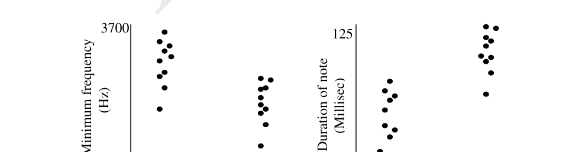
Predator-prey interaction graphs A, B, CTopic: Order-of-Magnitude Estimation Metodi: Experimental Data Analysis, Physical Modeling Competenze: Diagrammatic Reasoning, Experimental Data Analysis Fonte: Testo (PDF) — p.8
Problema 18
Great tits are passerine birds found in Europe as well as Asia. Along with forests, they also live in densely inhabited urban regions. The following graphs depict the frequencies and durations of songs of birds adapted to forest and urban environments.
(Two bar graphs: Left shows minimum frequency (Hz) on Y-axis, ranging ~3100-3700, comparing Urban and Forest. Right shows song note duration (ms) on Y-axis, ranging ~75-125, comparing Urban and Forest.)
Which of the following statements is correct?
(A) As compared to urban great tits, forest tits are required to spend more energy towards foraging and protecting the territory and hence have evolved low frequency songs which are energetically less demanding. (B) Noise made by vehicles bustling through cities occupy lower frequency channels hence only great tits that sing high-pitched songs can be clearly heard. (C) Short-note and high-pitched songs by urban tits require more energy and thus urban tits declare their greater relative fitness to other members of the species. (D) Songs by forest tits have longer notes with lower frequencies and can reach much longer distances in forest ecosystem.
Topic: Oscillations & Waves Metodi: Experimental Data Analysis, Wave Equation Competenze: Experimental Data Analysis, Diagrammatic Reasoning Fonte: Testo (PDF) — p.9
Problema 19
Migratory hummingbirds often guard winter territories to maintain exclusive access to nectar produced by certain flowers during their migration. This behavior depends on a number of factors including flower density, nectar yields of individual flowers, hummingbird density and ambient environmental conditions, which, in turn, would influence the metabolic costs incurred by the bird during foraging, territorial defence and other activities.
Suggest the parameters that may have been plotted on the X-axis and Y-axis respectively in the following graph.
(A graph shows a curve with territory size increasing then decreasing as a function of another variable.)
(A) X-axis: Hummingbird density; Y-axis: Flower density (B) X-axis: Flower density; Y-axis: Hummingbird density (C) X-axis: Territory size; Y-axis: Flower density (D) X-axis: Flower density; Y-axis: Territory size
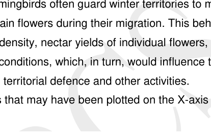
Territory size vs flower density graphTopic: Order-of-Magnitude Estimation Metodi: Experimental Data Analysis, Physical Modeling Competenze: Diagrammatic Reasoning, Physical Reasoning Fonte: Testo (PDF) — p.10
Problema 20
Which of the following support/s common ancestry of Humans, Cheetah, Whale and Bat?
i. Homologous organs ii. Analogous organs iii. Vestigial organs
(A) ii and iii only (B) i and ii only (C) i and iii only (D) i only
Topic: Order-of-Magnitude Estimation Metodi: Physical Modeling, Symmetry Argument Competenze: Physical Reasoning, Diagrammatic Reasoning Fonte: Testo (PDF) — p.10
Problema 21
Distribution of kinetic energy of a population of substrate molecules is depicted in the graphs in two different situations (I and II). Bold arrows in the graphs indicate the minimum energy required for the reaction to take place.
Situation I: Two graphs P and Q showing Maxwell-Boltzmann-like distributions of number of molecules vs. energy (arbitrary units 1-6); P has the activation energy threshold higher than in Q. Situation II: Two graphs R and S with different arrow positions (threshold energies).
Mark whether each of the following statements is true (T) or false (F).
A. In situation (I) reaction can proceed from P to Q while in situation (II), the reaction cannot proceed from R to S. ____ B. It is likely that reaction (II) is enzyme-driven. ____ C. Reaction cannot proceed in both (I) and (II) as most of the molecules are at a lower energy level than required. ____ D. Temperature of molecules in Q in situation (I) is likely to be higher than that in P. ____
Topic: Thermodynamics, Kinetic Theory Metodi: Kinetic Theory of Gases, Statistical Averaging Competenze: Diagrammatic Reasoning, Physical Reasoning Fonte: Testo (PDF) — p.12
Problema 22
Proteins and lipids are the main components of biological membranes. Membrane proteins can be present either in the form of peripheral or integral proteins. A few statements about these proteins are made. Mark whether each of the following statements is true (T) or false (F).
a. Peripheral proteins are more soluble in aqueous solutions than integral proteins. ___ b. In the peripheral proteins, non-polar amino acids predominate at the surface. ___ c. Peripheral proteins can be solubilized by treating the cell membrane with salt solution but this treatment is unlikely to remove transmembrane proteins. ___ d. Hormone receptor is an example of peripheral protein. ___
Topic: Order-of-Magnitude Estimation Metodi: Physical Modeling, Symmetry Argument Competenze: Physical Reasoning, Diagrammatic Reasoning Fonte: Testo (PDF) — p.12
Problema 23
Four sedimentation coefficients (S) are given below and four molecules/particles are listed.
a. Cytochrome C b. tRNA c. Influenza virus d. Lysosomes
(I) 4 x 10^3 S (II) 4 S (III) 700 S (IV) 1.7 S
Match the appropriate coefficient to each molecule/particle and fill the correct number (I-IV) in each blank.
a. _______ b. _______ c. _______ d. _______
Topic: Order-of-Magnitude Estimation Metodi: Order-of-Magnitude Estimation, Dimensional Analysis Competenze: Estimation & Approximation, Physical Reasoning Fonte: Testo (PDF) — p.13
Problema 24
Electrophoretic Mobility Shift Assay (EMSA) or ‘Gel Shift Assay’ is a technique based on the observation that migration of protein-DNA complexes is retarded as compared to free DNA fragments when subjected to non-denaturing Polyacrylamide Gel Electrophoresis.
In the following experiment, five reaction mixtures (I to V) are prepared as follows:
| Contents | I | II | III | IV | V |
|---|---|---|---|---|---|
| Radio labeled Lac gene (regulatory sequence only) | + | + | + | + | + |
| Lac repressor | - | + | + | + | + |
| Lactose | - | - | + | - | - |
| Glucose | - | - | - | + | - |
| Antibody to Lac repressor | - | - | - | - | + |
The samples are loaded in the non-denaturing Polyacrylamide gel of 5% concentration. Indicate the prominent band pattern that will be observed on auto radiography of the gel in wells II to V.
(Draw or describe band positions in lanes I-V.)
Topic: Order-of-Magnitude Estimation Metodi: Experimental Data Analysis, Physical Modeling Competenze: Experimental Data Analysis, Diagrammatic Reasoning Fonte: Testo (PDF) — p.13
Problema 25
If there are 12 centromeres in a cell during anaphase, the number of chromosomes in each daughter cell after cytokinesis is:
Answer: _______
Topic: Order-of-Magnitude Estimation Metodi: Physical Modeling, Dimensional Analysis Competenze: Mathematical Modeling, Physical Reasoning Fonte: Testo (PDF) — p.14
Problema 26
Carbonic anhydrase forms a family of enzymes that catalyses rapid interconversion of CO2 and water to bicarbonate and proton. Its role in kidney excretory function is shown in the diagram. Acetazolamide is an inhibitor of the enzyme.
(Diagram shows the biochemical pathway in the kidney tubule: CO2 + H2O -> H2CO3 -> HCO3- + H+, facilitated by carbonic anhydrase, and the resulting transport of Na+, HCO3- and H+ across the tubule membrane.)
Mark whether each of the following statements regarding acetazolamide is true (T) or false (F).
a. It will decrease renal excretion of Na+, bicarbonate and water. ___ b. It can be used to release excessive pressure built in the aqueous humor. ___ c. It can be used to relieve metabolic alkalosis as it will prevent secretion of H+ across the renal tubule. ___ d. It can aggravate high altitude sickness as it will lead to rise in blood CO2 concentration. ___
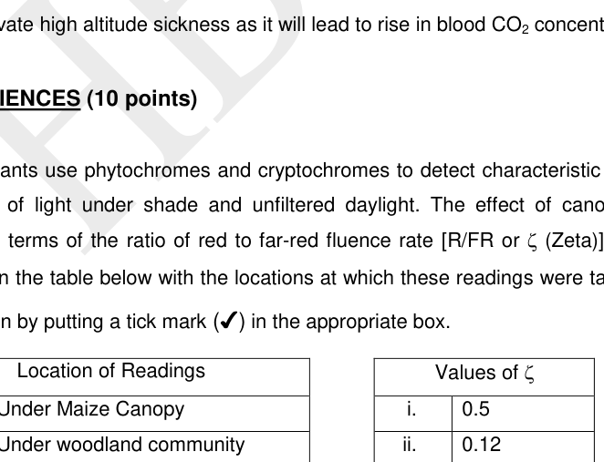
Carbonic anhydrase kidney pathway diagramTopic: Thermodynamics Metodi: Physical Modeling, First Law of Thermodynamics Competenze: Physical Reasoning, Diagrammatic Reasoning Fonte: Testo (PDF) — p.15
Problema 27
Plants use phytochromes and cryptochromes to detect characteristic differences in the composition of light under shade and unfiltered daylight. The effect of canopy-shade can be described in terms of the ratio of red to far-red fluence rate [R/FR or zeta]. Match the given values of zeta in the table below with the locations at which these readings were taken.
| Location of Readings | Values of zeta |
|---|---|
| a. Under Maize Canopy | i. 0.5 |
| b. Under woodland community | ii. 0.12 |
| c. Unfiltered daylight | iii. 1.2 |
| d. Under Wheat canopy | iv. 0.2 |
A. a-iv; b-ii; c-iii; d-i B. a-i; b-iii; c-ii; d-iv C. a-i; b-i; c-iii; d-iv D. a-iv; b-iii; c-ii; d-i
Topic: Geometric Optics, Wave Optics Metodi: Experimental Data Analysis, Physical Modeling Competenze: Experimental Data Analysis, Physical Reasoning Fonte: Testo (PDF) — p.15
Problema 28
Arabidopsis is a typical dicot in which growth in white light shows the following responses: (i) arrested hypocotyl elongation, (ii) straightening of the hypocotyl or plumular hook, (iii) unfolding of the cotyledons and (iv) expansion of the cotyledons. Experiments with phytochrome and cryptochrome deficient mutants showed results which have been depicted in the diagram below.
(Diagram shows a bar chart comparing hypocotyl length in wild-type and various photoreceptor-deficient mutants under different light conditions.)
Based on the above results, mark whether each of the following statements is true (T) or false (F).
A. The phyA-deficient single mutant (phyA) had little effect on hypocotyl elongation. ___ B. Light suppresses hypocotyl elongation by more than 50% in wildtype plants. ___ C. phyB is the principal phytochrome affecting hypocotyl elongation in Arabidopsis. ___ D. Any one of the photoreceptors is required for cotyledon opening. ___
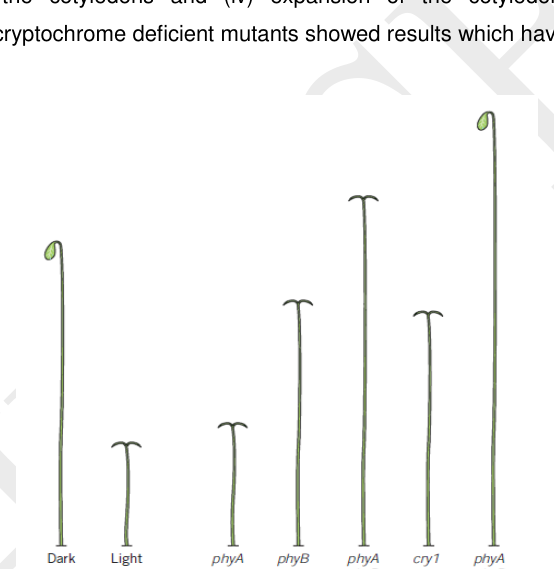
Hypocotyl elongation in photoreceptor mutantsTopic: Geometric Optics Metodi: Experimental Data Analysis, Physical Modeling Competenze: Experimental Data Analysis, Diagrammatic Reasoning Fonte: Testo (PDF) — p.15
Problema 29
Molecular events that occur in the germination of barley seeds are listed below. Arrange them in the correct order of occurrence and fill in the boxes with the appropriate numbers.
- Synthesis of cGMP.
- Receptor conformation changes.
- Guanylate cyclase activated.
- Binding of Gibberellic Acid to the membrane receptor present on extracellular face of aleurone cell.
- Myb RNA exits nucleus.
- Ligand receptor complex interacts with G protein.
- myb gene activated to transcribe RNA.
- cGMP enters nucleus and binds to repressor protein for myb gene.
- Transcription factor MYB synthesized on 80S ribosome in cytoplasm.
- Vesicles release the enzyme in endosperm.
- alpha-amylase synthesis on rough endoplasmic reticulum.
- MYB enters nucleus and binds to promoter of alpha-amylase gene.
Fill in the sequence starting from step 4.
Topic: Order-of-Magnitude Estimation Metodi: Physical Modeling, Superposition Principle Competenze: Physical Reasoning, Mathematical Modeling Fonte: Testo (PDF) — p.16
Problema 30
Plants can be classified according to their photoperiodic responses. In the early twentieth century, it was shown that biochemical signals from photoperiodically induced leaves can be transported to a distant target tissue where it can stimulate a response. The transmitted substance is termed as hormone Florigen. Flowering in three plants (I, II, III) is shown in the graph.
The graph shows % Flowering (0-100%) on Y-axis vs Day Length (h) 6-24 / Night Length (h) 18-0 on X-axis. Plant I flowers at short days; Plant II flowers across all day lengths; Plant III flowers at long days.
Indicate in which of the following situations the grafted plants would / would not show flowering. Put a tick mark for flowering and an X mark for no flowering.
a. Plant I kept in short day environment and grafted with a leaf from plant II kept in long day regime. __ b. Plant III kept in long day regime and grafted with a leaf from plant I kept in short day regime. __ c. Plant II kept in short day regime and grafted with a leaf from plant I kept in short day regime. __ d. Plant III kept in short day regime and grafted with a leaf from plant I kept in short day regime. __
Topic: Order-of-Magnitude Estimation Metodi: Experimental Data Analysis, Physical Modeling Competenze: Diagrammatic Reasoning, Experimental Data Analysis Fonte: Testo (PDF) — p.17
Problema 31
Research in animals has offered hope for the prevention of diseases via Assisted Reproductive Technology (ART) involving micromanipulation.
One such technique is described below.
Step I: Donor oocyte -> fertilized with intended parent sperm -> removal of pronuclei -> oocyte without pronuclei
Step II: Intended parent oocyte -> fertilized with intended parent sperm -> pronuclei transferred to donor oocyte without pronuclei.
Mark whether each statement is true (T) or false (F).
a. ART described above will result in an offspring having three parents. ___ b. This technique has offered a hope for the cure of all mitochondrial diseases. ___ c. The technique will be mainly useful when the intended male parent has mitochondria with mutant DNA. ___ d. This technique will be suitable even if the intended female parent has 50% of the mitochondrial copies mutated. ___
Topic: Order-of-Magnitude Estimation Metodi: Physical Modeling, Superposition Principle Competenze: Physical Reasoning, Diagrammatic Reasoning Fonte: Testo (PDF) — p.18
Problema 32
As blood flows from arterial end of capillaries to venous end of capillaries, several components are exchanged across the capillary lining. Various kinds of pressures existing at these two ends are listed below. (All pressures indicated as mm of Hg).
i. Hydrostatic pressure: 17 mm ii. Osmotic pressure: 26 mm iii. Hydrostatic pressure: 35 mm iv. Osmotic pressure: 1 mm v. Hydrostatic pressure: 0 mm
(A). Match the pressure values to the correct structures/components (a-c) and fill in the blanks:
a. Interstitial fluid: _____________ b. Blood at arterial end of capillary: _____________ c. Blood at venous end of capillary: ____________
(B). What will be the net value of pressure from:
a. arterial end of capillary to interstitial fluid? _______ mm b. venous end of capillary to interstitial fluid? _______ mm
Topic: Fluid Mechanics Metodi: Hydrostatic Equilibrium, Bernoulli’s Equation Competenze: Physical Reasoning, Mathematical Modeling Fonte: Testo (PDF) — p.18
Problema 33
Phylogenetic classification of 7 species of fish found in Arabian sea and 9 species of fish found in Antarctic sea is given. Some data about these fishes is provided in the table.
| Species | Habitat | Blood color | Muscle color | Heart size | Rate of blood circulation |
|---|---|---|---|---|---|
| 1-7 | Temperate sea | Red | Red | Normal | Normal |
| 8-10, 13, 15, 16 | Antarctic sea | White | Red | Large | High |
| 11, 12, 14 | Antarctic sea | White | White | Large | High |
(Phylogenetic tree shows species 1-16 with branching relationships.)
Mark whether each of the following statements is true (T) or false (F).
a. Lesser dissolved oxygen most probably led to the loss of hemoglobin gene in Antarctic fishes. ___ b. White colour of heart muscles in Antarctic fish indicates reduced blood volume in their bodies. ___ c. Loss of functional hemoglobin gene most probably occurred only once in the course of evolution while loss of functional myoglobin gene has occurred several times. ___ d. Loss of functional hemoglobin gene had more profound effect on the fish physiology than the loss of functional myoglobin gene. ___ e. Myoglobin, having oxygen storage function due to its high affinity, is more crucial in habitats such as Antarctic sea. ___
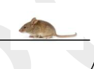
Fish phylogenetic tree partialTopic: Order-of-Magnitude Estimation Metodi: Experimental Data Analysis, Physical Modeling Competenze: Diagrammatic Reasoning, Experimental Data Analysis Fonte: Testo (PDF) — p.19
Problema 34
A student wanted to measure metabolic heat of a mouse using a calorimeter. For this, she designed a calorimeter made up of two containers, one fitting into the other. She placed a mouse (weight 5 gm) into the inner container and the space between the two containers was fully packed with ice. The outlet from the external container allowed the water to be collected into a jar. Knowing the amount of heat required to melt each gram of ice, she would calculate heat production by the mouse. Mark whether each of the following statements is true (T) or false (F).
a. The measurement will be an underestimate of the metabolic heat produced because the animal will be less active under the experimental conditions. ___ b. The measurement will be an overestimate of the metabolic heat produced because the body will produce more heat in order to maintain constant body temperature. ___ c. The readings will be higher than the true value because the environmental temperature will affect the melting of ice. ___ d. The readings will be lower if mouse is replaced by an animal of higher body weight. ___
Topic: Thermodynamics Metodi: First Law of Thermodynamics, Experimental Data Analysis Competenze: Experimental Data Analysis, Physical Reasoning Fonte: Testo (PDF) — p.20
Problema 35
A cross is made in Drosophila melanogaster between genotypes and . The F1 progeny is sib-mated to obtain the F2 progeny. The two genes are located on the 2nd chromosome and are 60 cM apart. Further, in case of D. melanogaster there is no crossing over in the males. What percentage of the progeny will have the genotype ? (Indicate the answer upto one decimal place.)
Answer: ______ %
Topic: Order-of-Magnitude Estimation Metodi: Physical Modeling, Statistical Averaging Competenze: Mathematical Modeling, Physical Reasoning Fonte: Testo (PDF) — p.21
Problema 36
Komodo dragon (Varanus komodoensis) is a large species of lizard found in Indonesia. A pedigree for a particular trait in Komodo dragon is shown below. Circles and squares represent females and males, respectively. The filled circles represent females showing the phenotype under study.
(Pedigree diagram shows three generations: Generation I has one unaffected male and one unaffected female; Generation II has one affected female; Generation III has two affected females and two unaffected males.)
From molecular studies it is known that the allele responsible for the phenotype is present in all the three generations. Mark whether each of the following statements is true (T) or false (F).
a. The mode of inheritance can be autosomal dominant with the mutation arising in the second generation. ___ b. The mode of inheritance can be autosomal recessive with the male in second generation being a carrier. ___ c. The mode of inheritance can be sex-linked recessive with an XX-XY sex chromosome system in Komodo dragon. ___ d. The mode of inheritance can be sex-linked recessive with an ZZ-ZW sex chromosome system in Komodo dragon. ___
Komodo dragon pedigree diagram
Topic: Order-of-Magnitude Estimation Metodi: Physical Modeling, Statistical Averaging Competenze: Diagrammatic Reasoning, Physical Reasoning Fonte: Testo (PDF) — p.21
Problema 37
The activity of an enzyme ‘X’ in wild type E. coli cells was studied when the cells were grown in the presence or absence of a compound ‘A’. Similar studies were also carried out with two independent mutants (mutant 1 and 2) that were isolated. The results are summarized in the graph below. Further, experiments were carried out to analyze the levels of transcript of the gene encoding enzyme ‘X’ by Northern hybridizations, results of which are presented below.
(Graph shows enzyme ‘X’ activity on Y-axis for wild type, mutant 1, and mutant 2, both with and without compound A. Northern blot shows transcript levels in the same conditions.)
On analysis of the data obtained, the following conclusions were made. Mark whether each of the following statements is correct or incorrect.
I. This is an example of an inducible system. ___ II. Compound ‘A’ represses the transcription of the gene encoding enzyme ‘X’. ___ III. In ‘mutant 1’ the gene encoding enzyme ‘X’ is likely to be mutated. ___ IV. In ‘mutant 2’, the mutation probably lies in a regulatory DNA element. ___
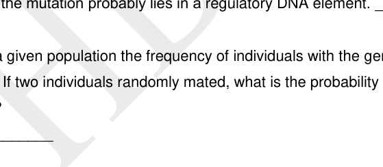
Enzyme X activity graph wild type and mutants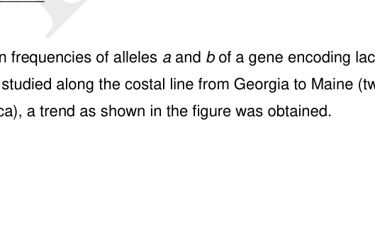
Northern blot transcript levelsTopic: Order-of-Magnitude Estimation Metodi: Experimental Data Analysis, Physical Modeling Competenze: Experimental Data Analysis, Diagrammatic Reasoning Fonte: Testo (PDF) — p.21
Problema 38
In a given population the frequency of individuals with the genotype is 0.01 and that of is 0.20. If two individuals randomly mated, what is the probability that the child will have the genotype ?
Answer: __________
Topic: Order-of-Magnitude Estimation Metodi: Statistical Averaging, Physical Modeling Competenze: Mathematical Modeling, Physical Reasoning Fonte: Testo (PDF) — p.22
Problema 39
When frequencies of alleles and of a gene encoding lactate dehydrogenase enzyme in killifish were studied along the costal line from Georgia to Maine (two states located on the east coast of America), a trend as shown in the figure was obtained.
(Graph shows allele frequency (0-1) on Y-axis vs geographic location from Georgia south to Maine north. Allele b frequency increases from south to north while allele a decreases.)
Mark whether each of the following statements is true (T) or false (F).
a. The data suggests that killifish are a freely interbreeding population that can travel substantial distances. ___ b. It is likely that alleles a and b vary in their functional properties, a having greater functional advantage at higher temperatures as compared to b. ___ c. The data indicates that disruptive selection has occurred along the coastal line of Georgia to Maine. ___ d. The data indicates that population at Maine is a founder population and allele b has evolved later during the course of evolution. ___
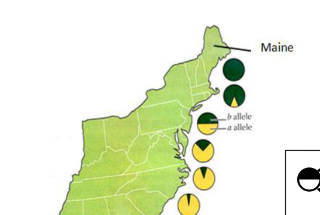
Allele frequency cline Georgia to MaineTopic: Order-of-Magnitude Estimation Metodi: Experimental Data Analysis, Statistical Averaging Competenze: Diagrammatic Reasoning, Experimental Data Analysis Fonte: Testo (PDF) — p.22
Problema 40
The pedigree below represents the inheritance of an autosomal recessive disorder. The DNA of the individuals (1-11) was isolated and amplified using a set of primers. The primers amplify a 5 kb (U) as well as a 2 kb (L) DNA fragment, which is linked to the gene controlling the trait.
(Pedigree shows three generations with affected and carrier individuals. Below each individual is a gel lane showing presence of the 5 kb (U) or 2 kb (L) band or both.)
Based on the available information in the pedigree and DNA profile, what is the probability that a child of individuals 10 and 11 will be a girl without the disorder? (Express your answer in a fraction.)
Answer: __________
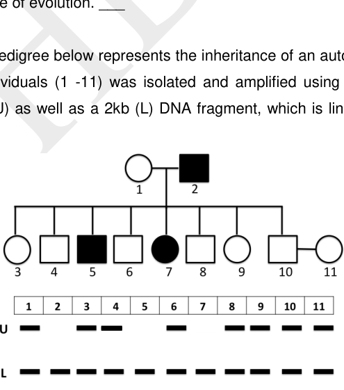
Pedigree with DNA gel profile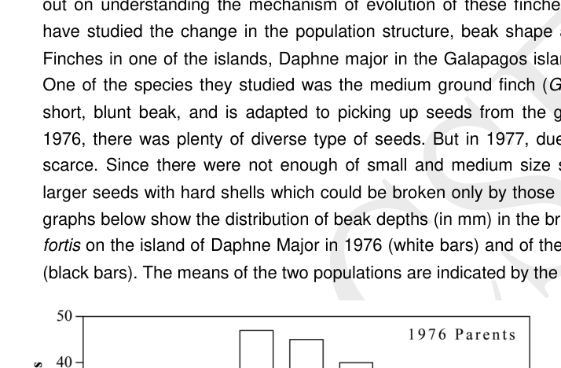
DNA band pattern continuationTopic: Order-of-Magnitude Estimation Metodi: Statistical Averaging, Physical Modeling Competenze: Diagrammatic Reasoning, Mathematical Modeling Fonte: Testo (PDF) — p.23
Problema 41
You are familiar with the famous Darwinian finches. Rosemary and Peter Grant have studied the change in the population structure, beak shape and body size of Finches in the island Daphne Major in the Galapagos islands over a period of 40 years.
One of the species they studied was the medium ground finch (Geospiza fortis) that possesses short, blunt beak, adapted to picking up seeds from the ground. In 1976, seeds were diverse and plentiful. But in 1977, due to a drought, seeds became scarce. Finches had to turn to larger seeds with hard shells which could be broken only by those with harder beaks. The graphs below show the distribution of beak depths (in mm) in the breeding population of Geospiza fortis on Daphne Major in 1976 (white bars) and of the survivors of the 1977 drought (black bars). The means of the two populations are indicated by the arrows.
(Bar chart showing frequency distribution of beak depths in mm. White bars represent 1976 population; black bars represent 1977 drought survivors. Mean beak depth has shifted to a larger value in 1977.)
Mark whether each of the following statements is true (T) or false (F).
a. This is a classic example of microevolution. ___ b. Significant variation in the beak-depth eventually leads to speciation. ___ c. The offsprings of the next generation (1978) will all most likely have beaks with greater depth. ___ d. The changes observed over a period of just one year is sufficient to infer on evolution of finches as it takes millions of years for fixing a particular trait. ___ e. This is an example of disruptive selection. ___ f. Because the beak depth size distribution will be stabilized in the next generation, this could be considered as a stabilizing selection. ___
Topic: Order-of-Magnitude Estimation Metodi: Experimental Data Analysis, Statistical Averaging Competenze: Diagrammatic Reasoning, Experimental Data Analysis Fonte: Testo (PDF) — p.24
Problema 42
A number of diseases have genetic basis. Even though the disease-causing alleles have detrimental effects on the affected individual, they seem to persist in the population.
Mark whether each of the following statements is true (T) or false (F).
a. A disease allele is likely to persist in a population if the disease adversely affects neurons during old age. _____ b. A disease allele is likely to persist in a population if the disease allele is harmless in the heterozygous form. _____ c. A disease allele is likely to persist in a population if the disease adversely affects the reproductive system during puberty. _____ d. A disease allele is likely to persist in a population if the disease allele is located very close to an allele of an essential gene. _____
Topic: Order-of-Magnitude Estimation Metodi: Statistical Averaging, Physical Modeling Competenze: Physical Reasoning, Mathematical Modeling Fonte: Testo (PDF) — p.25
Problema 43
Snowshoe hares are found in northern part of the north hemisphere. They mostly live in forests, fields and forage on different types of grasses. In the summer months, they have reddish brown fur while in winter it is snowy white. It has been found that daylight length is the determining factor for the synthesis of melanin pigment responsible for brown fur. However, global warming has posed a threat to the very existence of these animals.
Mark whether each of the following statements is true (T) or false (F).
a. The phenomenon of change in fur color of a snowshoe hare in response to seasons is an example of disruptive selection. ___ b. The longer hind limbs prove advantageous for fast running and running uphill. Thus this trait is under directional selection. ___ c. Increase of carbon dioxide concentration in the earth’s atmosphere causes respiratory distress to homeothermic animals which can prove lethal. ___ d. Rise in temperature due to global warming delays snowing in winter which makes the hare more visible to the predators. ___
Topic: Order-of-Magnitude Estimation Metodi: Physical Modeling, Experimental Data Analysis Competenze: Physical Reasoning, Estimation & Approximation Fonte: Testo (PDF) — p.25
Problema 44
Potentilla glandulosa, sticky cinquefoil, grows from sea level to over 3,000 m elevation and shows height variation along this elevational gradient. In a study, plants naturally growing at three different elevations (lowland, mid-elevation and alpine) were transplanted and grown in gardens at other two elevations along with the native plants. The height of the transplanted as well as the native plants was measured.
The null hypothesis of the study predicted certain results. The actual results of the study are also shown.
(Two graphs: top shows null hypothesis prediction - all transplanted plants reach the same height regardless of origin; bottom shows actual results - plants from different source elevations have different heights even at the same transplant elevation.)
(A) What was the null hypothesis of the study? Choose the correct answer.
a. Height of the plants is determined only by genetic factors. b. Height of the plants is determined only by environmental conditions. c. Height of the plants is determined by the combination of genetic factors and environmental conditions. d. Height of the plants is determined by genetic factors but only under specific environmental conditions.
(B) Mark whether each of the following statements is true (T) or false (F).
a. Individuals native to the alpine elevation grow to their maximum possible height at alpine elevation. ______ b. Mid-elevation is the optimum for the plants to reach the maximum height. _____ c. The height of plants from lowland population decreases as the elevation increases. ____ d. The alpine elevation is the harshest environment for the plants to grow in height. _____
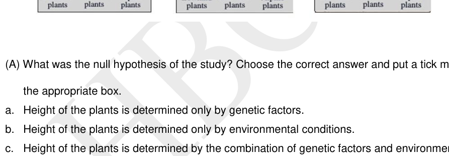
Null hypothesis predicted plant heights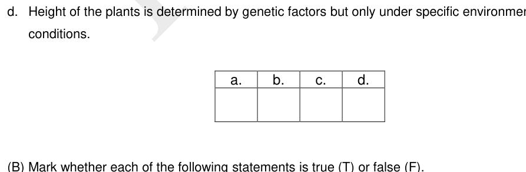
Actual transplant experiment resultsTopic: Order-of-Magnitude Estimation Metodi: Experimental Data Analysis, Physical Modeling Competenze: Experimental Data Analysis, Diagrammatic Reasoning Fonte: Testo (PDF) — p.25
Problema 45
Five warbler species, Cape May (Dendroica tigrina), yellow-rumped (D. coronata), black-throated green (D. virens), blackburnian (D. fusca), and bay-breasted (D. castanea), are about the same size and shape and all feed on insects. Robert MacArthur found that each species predominantly feeds in different zones in spruce trees, reducing competition.
If another study finds that the number of individuals of each warbler species found in the forest is the same, which of the following can be predicted? Choose the correct answer.
a. The diversity of insects found on spruce trees is evenly distributed across feeding zones of the warblers. b. The biomass of insects found in different feeding zones of the warblers is approximately the same. c. The total number of insects found on a spruce tree remains approximately the same across different trees. d. The density of insects found in the forest is evenly distributed across spruce trees.
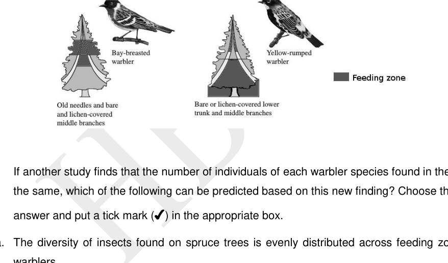
Warbler species feeding zones in spruce treeTopic: Order-of-Magnitude Estimation Metodi: Physical Modeling, Statistical Averaging Competenze: Physical Reasoning, Estimation & Approximation Fonte: Testo (PDF) — p.27
Problema 46
Given is the relative fitness (performance) of insects at different temperatures. CT_min, CT_max and T_opt stand for minimum critical temperature, maximum critical temperature and optimal temperature, respectively. The vertical line represents the current average temperature in the different regions.
(Graph shows two bell-shaped fitness curves - one for temperate insects and one for tropical insects - as a function of temperature. A vertical line indicates current average temperature for each region.)
By the end of the 21st century, average temperatures are predicted to increase by 5 degrees C.
Based on the above information, mark whether each of the following statements is true (T) or false (F).
A) Relative fitness of temperate insects is predicted to be negatively affected by increase in temperature by the end of the 21st century. _____ B) Temperate insect species are more likely to survive at temperatures lower than 10 degrees C than tropical species. _____ C) Tropical insect species at its current optimum temperature is more likely to die-off than temperate insect species at its optimum temperature by the end of the 21st century. _____
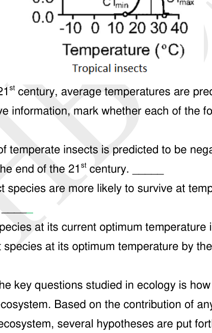
Insect fitness vs temperature tropical and temperateTopic: Thermodynamics, Order-of-Magnitude Estimation Metodi: Experimental Data Analysis, Physical Modeling Competenze: Diagrammatic Reasoning, Physical Reasoning Fonte: Testo (PDF) — p.28
Problema 47
One of the key questions studied in ecology is how does biodiversity affect the functioning of an ecosystem. Based on the contribution of any given species towards the functioning of the ecosystem, several hypotheses are put forth such as:
- Redundancy hypothesis
- Linear hypothesis
- Keystone hypothesis
- Idiosyncratic hypothesis
The graphs given below represent possible effects of removal of species from an ecosystem on its overall functioning. (Four graphs P, Q, R, S each showing ecosystem processes vs biodiversity loss from natural level.)
Against each statement, fill in the appropriate hypothesis (1-4) and graph (P-S) in the table.
a. Every species makes a contribution (smaller or larger) to the process, so if it is removed, that contribution is subtracted from the process. b. Many species in the ecosystem are at least partly substitutable while their contribution to the ecosystem process can be taken over by other, functionally similar species. c. Singular species with disproportionate effect on ecosystem relative to its abundance by modifying the resource availability for other members of the community. d. The impact of loss or addition of species depends on environmental conditions so that a species makes different contributions to ecosystems depending on conditions.
| Statement | Hypothesis | Graph |
|---|---|---|
| a. | ||
| b. | ||
| c. | ||
| d. |
Topic: Order-of-Magnitude Estimation Metodi: Physical Modeling, Experimental Data Analysis Competenze: Diagrammatic Reasoning, Physical Reasoning Fonte: Testo (PDF) — p.28
Problema 48
The age/sex composition of a population of bonnet macaques over the years is given below. Mark whether each of the following statements is true (T) or false (F).
| 2005 | 2009 | 2013 | |
|---|---|---|---|
| Estimated Population Size | 40 | 45 | 30 |
| Adult Male (%) | 6.67 | 13.11 | 20.00 |
| Adult Female (%) | 10.00 | 13.56 | 32.50 |
| Subadult Male (%) | 20.00 | 13.67 | 25.00 |
| Subadult Female (%) | 16.67 | 17.33 | 10.00 |
| Juvenile Male (%) | 22.33 | 19.67 | 5.00 |
| Juvenile Female (%) | 24.33 | 22.67 | 7.50 |
a. The macaque population was growing relatively faster in 2013 when, despite its relatively smaller population size, it had the highest proportion of adults. ___ b. The relatively more equable adult male-to-female ratio in 2009 may have been responsible for the overall smaller population size in 2013. ___ c. An expansive population pyramid, as shown by the population in 2005, is characterised by a high birth rate and relatively lower life expectancy. ___ d. The subadult male-to-female ratio reflects that of the juveniles in this population. ___
Topic: Order-of-Magnitude Estimation Metodi: Experimental Data Analysis, Statistical Averaging Competenze: Experimental Data Analysis, Mathematical Modeling Fonte: Testo (PDF) — p.30
Problema 49
Holmes and Sherman (1982) studied kin recognition in Belding’s ground squirrels. They captured pregnant females and used their pups to create four kinds of experimental rearing groups: siblings reared by one mother (S.RT), siblings reared apart by different mothers (S.RA), non-siblings reared as a single litter (NS.RT) and non-siblings reared apart (NS.RA). When they were older, animals from the four groups were placed in pairs in arenas and their agonistic interactions were observed, the results of which are shown below (a). Field observations were also made on aggression and cooperation among yearling females which were full- or half-sisters (b and c).
(Graphs: (a) bar chart of agonistic interactions for four rearing groups S.RT, S.RA, NS.RT, NS.RA; (b) aggression rates between full-sisters and half-sisters; (c) cooperation rates between full-sisters and half-sisters.)
Mark whether each of the following statements is true (T) or false (F).
a. Non-siblings reared together are no more aggressive than siblings reared together. ___ b. Full-sisters are more aggressive to and less cooperative with one another. ___ c. Genetic relatedness does not influence in any way the development of close cooperative relationships between females. ___ d. Association in early life is important for individuals to treat other individuals as their kin. ___
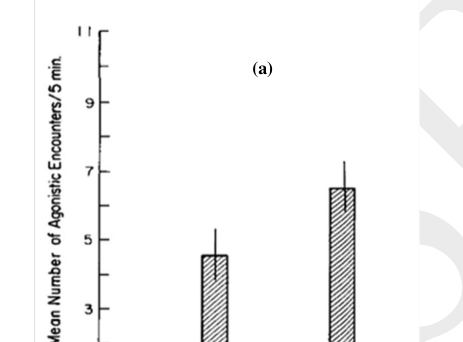
Agonistic interaction rates four rearing groups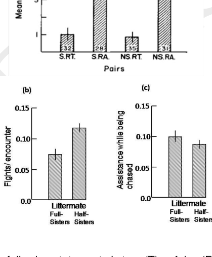
Aggression and cooperation full vs half sistersTopic: Order-of-Magnitude Estimation Metodi: Experimental Data Analysis, Statistical Averaging Competenze: Experimental Data Analysis, Diagrammatic Reasoning Fonte: Testo (PDF) — p.31
Problema 50
The diploblastic radially symmetrical cnidarians are shown to possess most genes implicated in development of mesoderm in bilaterally symmetrical triploblastic animals suggesting different evolutionary hypotheses for a Cnidarian-Bilaterian Ancestor:
A. Mesodermal genes originated before actual origin of mesoderm and played no role in germ layer specifications in Cnidaria. B. Mesodermal genes played a role in specification of ectoderm and endoderm in Cnidaria but with the evolution of Bilateria they consequently got associated with mesoderm. C. Cnidaria evolved by reduction of germ layers or fusion of mesoderm and endoderm from a triploblastic bilateria ancestor therefore, the genes for mesoderm were already present.
Among these hypotheses, evidences have supported hypothesis B only. In view of this, mark whether each of the following statements is true or false.
| Statements | Possible Explanation | True | False |
|---|---|---|---|
| a. | Pre-existing genes were silenced during early stages of evolution in Cnidaria. | ||
| b. | Cnidaria are most probably the degenerative forms of Acoelomates with knockdown of mesoderm genes. | ||
| c. | The Cnidarian genes possibly duplicated, mutated and later were switched on for new functions in Bilateria. | ||
| d. | The genes pre-existed in Cnidaria-Acoela ancestor but, the expression was delayed till evolution of mesoderm. |
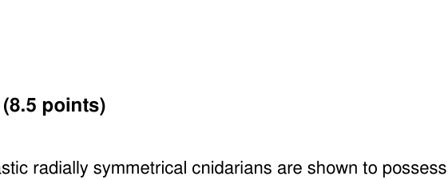
Cnidarian-Bilaterian evolutionary hypotheses diagramTopic: Order-of-Magnitude Estimation Metodi: Physical Modeling, Superposition Principle Competenze: Physical Reasoning, Diagrammatic Reasoning Fonte: Testo (PDF) — p.32
Problema 51
Following diagram is an unrooted tree showing phylogenetic relationships. Loci 1 to 5 are probable roots to establish the relationship.
These are: 1: Radial, indeterminate cleavage, 2: Deuterostomia, 3: Notochord, 4: Spiral cleavage, 5: Ecdysis
(Unrooted phylogenetic tree showing branching relationships among major animal phyla including cnidarians, molluscs, annelids, arthropods, echinoderms, chordates.)
It is based upon following assumptions: A. Radial cleavage evolved earlier to spiral cleavage. B. Cnidaria is closer to Deuterostomia as its gastral pouches are comparable to archenteric pouches forming true coelom in deuterostomes. Protostomes are thus on a different lineage. C. Mollusca are partially/preliminarily segmented while Annelids and Arthropods have true metameric segmentation.
In view of the above, which of the following cladograms exhibit correct phylogeny?
| Cladogram | Correct | Incorrect |
|---|---|---|
| P | ||
| Q | ||
| R |
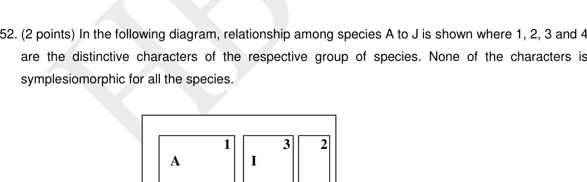
Unrooted phylogenetic tree animal phylaTopic: Order-of-Magnitude Estimation Metodi: Physical Modeling, Symmetry Argument Competenze: Diagrammatic Reasoning, Physical Reasoning Fonte: Testo (PDF) — p.32
Problema 52
In the following diagram, relationship among species A to J is shown where 1, 2, 3 and 4 are the distinctive characters of the respective group of species. None of the characters is symplesiomorphic for all the species.
(Diagram shows a branching diagram with characters 1, 2, 3, 4 mapping to groups of species A-J.)
State which of the cladograms P, Q, R, S correctly represent the relationships considering character advancement from 1 -> 2 -> 3 -> 4.
| Cladogram | Correct | Incorrect |
|---|---|---|
| P | ||
| Q | ||
| R | ||
| S |
Topic: Order-of-Magnitude Estimation Metodi: Physical Modeling, Symmetry Argument Competenze: Diagrammatic Reasoning, Physical Reasoning Fonte: Testo (PDF) — p.33
Problema 53
Five peptides (P - T) of a part of a structure of enzyme protein found in five vertebrates are given. Each bead represents an amino acid. Different amino acids are indicated by different patterns of beads.
(Diagrams P, Q, R, S, T each show a chain of 8 patterned beads representing the amino acid sequence of the same enzyme region in five different vertebrate species. The bead patterns differ between species indicating amino acid substitutions.)
Based on the data given, draw the most parsimonious cladogram for the five species. (Only an entirely correct cladogram will be given points.)
Answer: [Draw cladogram]
Peptide bead sequences five vertebrate species
Topic: Order-of-Magnitude Estimation Metodi: Physical Modeling, Approximation & Series Expansion Competenze: Diagrammatic Reasoning, Physical Reasoning Fonte: Testo (PDF) — p.33